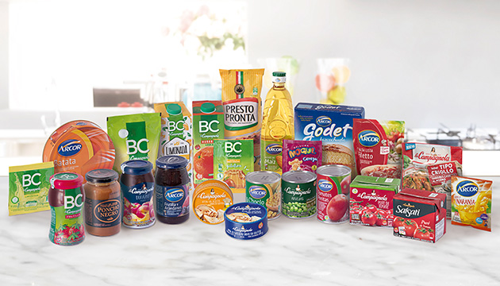

Grupo Arcor posee un importante know-how en la elaboración de productos alimenticios y cuenta con 5 plantas industriales en Argentina que trabajan con una rigurosa selección de materias primas y avanzados procesos tecnológicos. Su oferta de productos de alta calidad se comercializa bajo un portfolio de marcas lideres muy valoradas y reconocidas por los consumidores tales como: Arcor, BC, La Campagnola, Salsati y Presto Pronta entre otras. El Negocio de Alimentos de Grupo Arcor participa en más de 12 categorías, entre las que se encuentran mermeladas, dulces sólidos, salsas, tomates, conservas vegetales, frutas y pescados, postres, bebidas, jugos en polvo, premezclas, polentas, aderezos, dulce de leche, aceites, saborizadores con bolsa para horno, entre otras, liderando la mayoría de los segmentos en los cuales participa. Además, la compañía posee una importante visión exportadora teniendo fuerte presencia en los mercados de Latinoamérica y muchos países del mundo.
Alimentos de consumo masivo en el hogar
